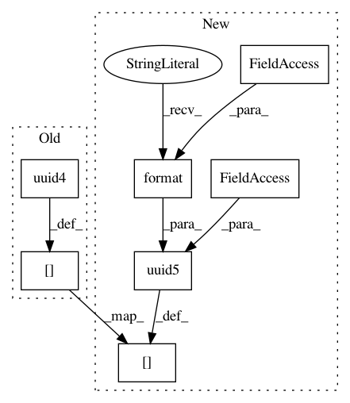

cfb34328a9c765dc6d4c6c65695d5ff9fce227ac,polyaxon/scheduler/spawners/pytorch_spawner.py,PytorchSpawner,create_job_uuids,#PytorchSpawner#,14
Before Change
def create_job_uuids(self):
job_uuids = super().create_job_uuids()
job_uuids[TaskType.WORKER] = [
uuid.uuid4().hex for _ in range(self.get_n_pods(task_type=TaskType.WORKER))]
return job_uuids
def get_env_vars(self, task_type, task_idx):
After Change
def create_job_uuids(self):
job_uuids = super().create_job_uuids()
job_uuids[TaskType.WORKER] = [
uuid.uuid5(self.experiment_uuid_instance, "{}-{}".format(TaskType.WORKER, i)).hex
for i in range(self.get_n_pods(task_type=TaskType.WORKER))]
return job_uuids
In pattern: SUPERPATTERN
Frequency: 4
Non-data size: 7
Instances
Project Name: polyaxon/polyaxon
Commit Name: cfb34328a9c765dc6d4c6c65695d5ff9fce227ac
Time: 2019-03-03
Author: mouradmourafiq@gmail.com
File Name: polyaxon/scheduler/spawners/pytorch_spawner.py
Class Name: PytorchSpawner
Method Name: create_job_uuids
Project Name: polyaxon/polyaxon
Commit Name: cfb34328a9c765dc6d4c6c65695d5ff9fce227ac
Time: 2019-03-03
Author: mouradmourafiq@gmail.com
File Name: polyaxon/scheduler/spawners/horovod_spawner.py
Class Name: HorovodSpawner
Method Name: create_job_uuids
Project Name: polyaxon/polyaxon
Commit Name: cfb34328a9c765dc6d4c6c65695d5ff9fce227ac
Time: 2019-03-03
Author: mouradmourafiq@gmail.com
File Name: polyaxon/scheduler/spawners/tensorflow_spawner.py
Class Name: TensorflowSpawner
Method Name: create_job_uuids
Project Name: polyaxon/polyaxon
Commit Name: cfb34328a9c765dc6d4c6c65695d5ff9fce227ac
Time: 2019-03-03
Author: mouradmourafiq@gmail.com
File Name: polyaxon/scheduler/spawners/mxnet_spawner.py
Class Name: MXNetSpawner
Method Name: create_job_uuids